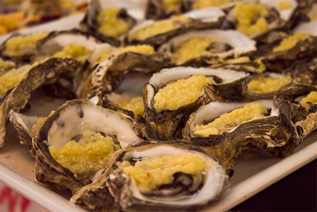

Некоторые заведения щеголяют вывесками "рекомендовано Центральным телевидением Китая". И это отнюдь не преувеличение: репортажи о местной кухне и сюжеты, связанные с гастрономическим туризмом в Танмэнь, - частые гости на телеканалах Поднебесной.
Морепродукты
в Боао
Ласковое Южно-Китайское море обладает богатейшими промысловыми ресурсами
Всего лишь небольшой автомобильный мост отделяет Боао от крупнейшего рыбного порта острова Хайнань - посёлка Танмэнь. Ежедневно сотни судов отправляются отсюда за уловом.

Нередко на пляжной полосе Боао не увидишь ни души. Поэтому медитации можно предаваться прямо на белом прибрежном песке.
1 из 9
Танмэнь известен на весь Китай, но только в Боао его продукция доставляется в полном ассортименте живой (в морской воде). Это позволяет шеф-поварам отелей, ресторанов и прибрежных баров Боао баловать своих гостей отличным меню из даров моря.
Конечно, многие гурманы стремятся отведать морские деликатесы практически с борта рыболовного судна. Для них вдоль берега в Танмэне выстроено бесчисленное количество ресторанчиков самого разного уровня цен.
Запомнить поездку в Портовый посёлок поможет не только приятное послевкусие: улочки Танмэня изобилуют художественными салонами (язык не поворачивается назвать их лавками), в которых можно приобрести изящные сувениры и прекрасные тропические раковины.
Советы нашим читателям:
Справьтесь у администратора Вашего отеля, какие морепродукты предлагает местный ресторан. Будьте уверены, что блюда будут созданы из свежайшего танмэньского улова.
Посетите приморскую барную улочку. Морская кухня во многих барах не уступает меню звездных отелей.
Съездите в посёлок-порт Танмэнь за блюдами из даров моря буквально, только что доставленных с борта рыболовного судна. Большинство ресторанчиков лояльно относится к клиентам, приводящим своё вино, но можно и продегустировать местное пиво и крепкий алкоголь.
Приценитесь к сувенирам в танмэньских магазинчиках. Не забудьте: здесь принято торговаться.